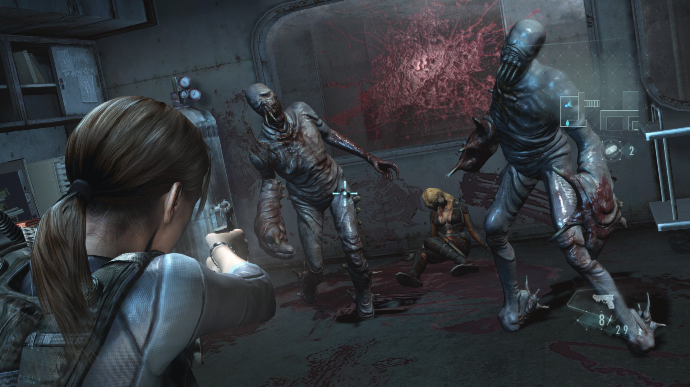

Sinopsis
Resident Evil: Revelations, cuyo título original en Japón es Biohazard: Revelations, es un videojuego japonés de disparos en tercera persona perteneciente al género de videojuegos de terror, desarrollado y publicado por Capcom y lanzado originalmente en 2012 para la consola portátil Nintendo 3DS. Cronológicamente se ubica entre Resident Evil 4 y Resident Evil 5 y sigue a los agentes antiterroristas Jill Valentine, Chris Redfield y Parker Luciani mientras intentan evitar que una organización bioterrorista llamada Il Veltro infecte los océanos de la Tierra con un nuevo virus llamado T-Abyss.
Cap 1: "Directos al infierno"
En un informativo, una presentadora relata la historia de la ciudad flotante de Terragrigia, una ciudad construida en mitad del Mediterráneo y abastecida por energía solar. En el 2004, una organización terrorista llamada Veltro, desató un ataque biológico en la ciudad, por lo que la FBC decidió arrasar Terragrigia con un ataque de su propia matriz solar. La FBC anunció entonces la disolución de Veltro. Un año después del suceso, en una playa (horas antes del comienzo del juego), el comandante de la BSAA, Clive R. O'Brian ordena a Jill y Parker tomar muestras de la infección cerca de los restos de la ciudad. Tras eso, es cuando O'Brian es avisado que la señal de Chris y Jessica se ha perdido. De nuevo en el buque, Jill encuentra a un supuesto Chris encerrado en una habitación trabada. Buscando la llave se encuentra a una mujer siendo masacrada por B.O.Ws, en su cadáver encuentra la llave para rescatar a Chris. Sin embargo, resulta ser una trampa, y un gas somnífero deja dormidos a ella y Parker, mientras un encapuchado de Veltro les habla y le dice: "Es tiempo que sepa la verdad, señorita Valentine."
Cap 2: "Misterio doble"
Entonces, el juego presenta a Chris Redfield y Jessica Sherawat en medio de una montaña nevada en Finlandia. En un momento, ven un avión que transportaba virus de Veltro estrellándose. Al atravesar la mina helada, llegan a una base donde al parecer opera la organización. O'Brian entonces ordena a Chris y Jessica partir a rescatar a Jill y Parker. De nuevo en el buque, Jill se despierta en una habitación en la cual está encerrada y sin armas. Evade a los B.O.W.s, y en el comedor se topa con Parker y recuperan sus armas. Finalmente, llegan al puente, donde son atacados por un extraño hombre pelirrojo quien dispara.
Episodio 3: Fantasmas de Veltro La acción traslada a los sucesos de Terragrigia: la FBC, dirigida por Morgan Lansdale, decide a evacuar la ciudad ante la inminente destrucción. Parker y Jessica, que por aquel entonces pertenecían a la FBC, luchan hasta salir del edificio. De nuevo en el buque, el pelirrojo llamado Raymond Vester tiene un pequeño reencuentro con Parker, siendo que parecen conocerse, pero de todas formas se marcha. Jill y Parker tienen que llegar a la sala de comunicaciones, pero antes deben eliminar al oficial de estas, transformado en un horrible B.O.W. En esta edición, el jugador deberá usar la pistola de mano, la escopeta y un rifle. De nuevo se vuelven a topar con Raymond, en un vídeo ven al encapuchado de Veltro, el cual revela su rostro y declara tener el virus T-Abyss, con el cual puede infectar 1/5 del agua del planeta. Mientras, O'Brian envía a dos agentes de la BSAA; Quint y Keith, a la base de Finlandia, a la vez que Chris y Jessica buscan el Queen Zenobia. Episodio 4: Retorno a una pesadilla Jill y Parker deciden restablecer la electricidad del barco, pero Raymond les pide ayuda para encontrar a Rachel Foley, su compañera que perdió en el buque, Jill recuerda el misterioso cadáver de una mujer que encontró, pero ya se ha transformado en un demoníaco Ooze, tras acabar con ella, consiguen la llave de un elevador para conectar la electricidad.
Episodio 5: Secretos descubiertos Quint y Keith llegan a la base de Volkoinen Mökki, en Finlandia, para buscar los archivos de Veltro. En las cámaras de seguridad ven un avión ser atacado por un B.O.W. y a un sujeto ser asesinado por un ser invisible. En el cadáver encuentran un dispositivo para poder hurgar en los datos del avión. De nuevo con Jill y Parker, estos siguen en el elevador, pero descubren que el barco se está inundando, de modo que buscan la manera de restablecer la electricidad y bajar los mamparos. Pero cuando lo logran, la habitación donde se encuentran comienza a inundarse. Mientras, O'Brian habla con Quint y Keith y les dice que han perdido el rastro del barco. Tras rastrear los datos del avión estrellado, Quint y Keith le envían las coordenadas del buque, pero Quint dice que él ha calculado nada y que Veltro también está buscando el buque. Mientras, Chris y Jessica reciben las coordenadas y parten hacia allá.
Episodio 6: Gato y ratón Chris y Jessica llegan al Queen Zenobia. Mientras, Jill y Parker se siguen ahogando. Al llegar a la sala de máquinas, el primer par no los encuentran, es entonces cuando descubren que están en el buque Queen Semiramis, un barco gemelo del Queen Zenobia. Jill y Parker logran encontrar una salida y bajar los mamparos, van a la cubierta de observación donde son atacados por un extraño B.O.W., después van a la antena para comunicarse con O'Brian. Este les dice que todo ha sido una trampa, y recibe entonces un mensaje de la FSE de que la matriz de energía solar que destruyó Terragrigia vuelve a estar en marcha: la FBC se propone destruir el Queen Zenobia.
Episodio 7: Regia Solis O'Brian les dice que no puede evacuarlos pero que Chris parte hacia allí por mar. Quint les comunica que para desviar el ataque de la matriz (llamada Regia Solis), pueden usar un UAV que Veltro usó en su ataque sobre Terragrigia y que se encuentra en la cubierta de proa. Morgan Lansdale autoriza el ataque, aunque finalmente lanzan el UAV deteniendo al Regia Solis, pero no evitan que una gran ola producida por el impacto alcance al barco.
Episodio 8: Todo en juego A raíz del impacto el barco se empieza a inundar rápidamente, Jill y Parker tienen que bucear por todo el barco pero reciben un mensaje de Chris: él y Jessica parten hacia el Queen Zenobia. Al llegar al casino del barco aparece el encapuchado de Veltro. Poco antes de eso, Chris y Jessica se acercan en una embarcación al barco, donde son atacados por unos tentáculos que logran eliminar.
El encapuchado les promete revelar los secretos del Queen Zenobia y por qué alguien intenta destruir el buque, pero antes de poder hablar, Jessica dispara al encapuchado, que resulta ser Raymond. Con su último aliento, Raymond les pide revelar el secreto del barco. Pero en ese momento, este comienza a tambalearse, Jill y Chris deciden ir juntos a buscar el virus y evitar que salga del barco. Mientras, Parker y Jessica buscan la manera de retrasar el hundimiento. Finalmente, Jill y Chris llegan al laboratorio del virus T-Abyss.Episodio 9: Sin salida En el lugar del accidente en Finlandia, Quint y Keith descubren que el retorno de Veltro es todo un montaje orquestado por O'Brian, el comandante de la BSAA, para atraer a Morgan Lansdale, el jefe de la FBC. Quint le envía unos datos a O'Brian justo antes que un bombardeo destruya la base en la que estaban los agentes. De nuevo en el laboratorio del Queen Zenobia, Jill descubre que Morgan Lansdale estuvo detrás del ataque a Terragrigia, y un nuevo prototipo de vacuna que al inyectarse, evita contagiarse con el virus. A través de un código de autentificación, neutraliza las fuentes de virus que estaban en el laboratorio para ser esparcidas. Mediante un vídeo, Morgan les "felicita" por su éxito, les dice que todo se ha terminado y que ya conocía los planes de O'Brian y la BSAA, entonces revela que va a destruir el Queen Zenobia.
Episodio 10: Redes enredadas Mientras tanto, Parker se separa de Jessica para activar los mamparos, al llegar al puente de mando, Parker apunta a Jessica diciendo que sospecha que ella es una topo infiltrada de la FBC en la BSAA. Entonces aparece Raymond, el cual revela que sigue vivo gracias a un chaleco antibalas, dice que Jessica pretende activar el mecanismo de autodestrucción del barco para eliminar las pruebas, Parker no confía en Raymond, lo que aprovecha Jessica para disparar a Parker, después de activar el mecanismo, Jessica huye, entonces Parker le pide a Raymond que vaya tras ella. De nuevo con Chris y Jill, en un vídeo se ve la destrucción del Queen Semiramis, Morgan revela que el Queen Zenobia sufrirá el mismo destino. Huyendo del barco, Jill se topa con Parker malherido por el disparo, tras arrastrarlo con ella, cuando iban por un puente este se cae, Parker se agarra a Chris pero para evitar retrasarles se lanza al vacío ante la mirada de ambos. Con Parker aparentemente muerto, Chris y Jill logran llegar a cubierta mientras el barco se destruye, entonces descubren un enorme B.O.W. que los ataca
Episodio 11: Revelaciones Tras lograr rechazar al B.O.W., Chris y Jill suben al helicóptero, pero el monstruo les ataca de nuevo, sin embargo logran eliminarlo con las ametralladoras de la aeronave y con un lanzacohetes que les lanza Kirk, el piloto. Tras contemplar la destrucción del Queen Zenobia y comunicar a O'Brian la muerte de Parker y lo ocurrido con Morgan, O'Brian les relata la verdad de todo. Hacía un año en Terragrigia, Parker y Jessica luchaban por llegar a la sala de mando, entonces se revela que ambos ya conocían los planes de Morgan de planear la destrucción de la ciudad, tras encontrar malherido a Raymond (en ese entonces un simple cadete) llegan al mencionado cuarto.
Episodio 12: Hundido Llegó el momento de terminar la misión de una vez por todas. Chris y Jill se dirigen buceando al hundido Queen Dido, en busca de pruebas que incriminen a Morgan Landsdale acerca de la presunta colaboración suya con Veltro. Tras escapar vivos de habitaciones hundidas con globsters, el dúo se adentra por los siniestros pasillos hasta llegar a una habitación donde se encuentran una docena de cadáveres de miembros de Veltro, donde también se encuentran unas marcas que indican que sobrevivieron un año en ese barco, y otra habitación donde también se encuentra una grabación donde se puede observar a Jack Norman (el líder de Veltro) inyectándose el T-Abyss, ya que según él, era la única forma de escapar vivo de ese barco. Tras escuchar la grabación, Chris y Jill entran en la última habitación, donde ya se encuentra Norman esperando y donde se inyectará otra dosis del T-Abyss y así transformándose en un monstruoso Tyrant, capaz de crear ilusiones ópticas y situarse detrás de los protagonistas. Tras la dura batalla final, Chris y Jill abandonan el barco con la PDA de Norman, donde se encuentran grabadas las pruebas que incriminan a Morgan. En una escena al final de los créditos Raymond le entrega a Jessica una muestra del virus T-Abyss.